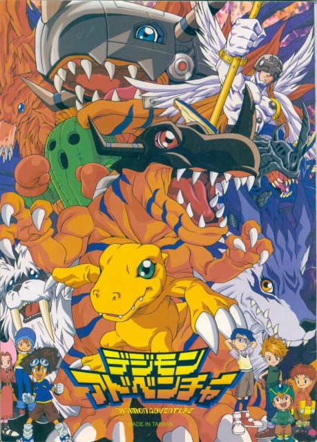
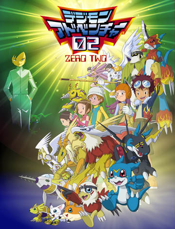
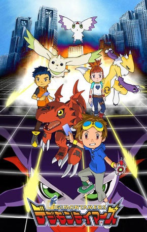
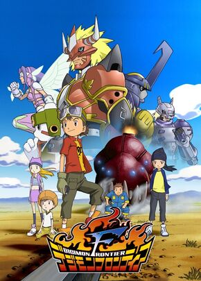
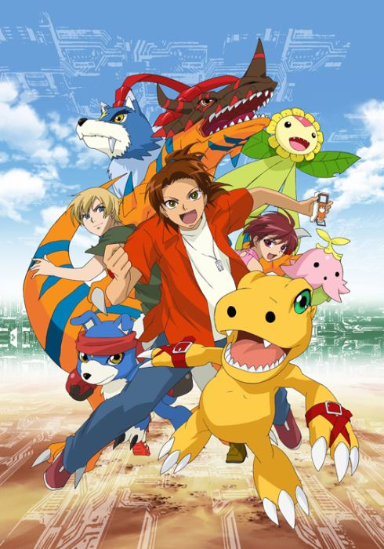

Digimon Adventure

Sinopse
Um grupo de sete crianças é levado para outro mundo - o Digital World - que descobrem ser uma
realidade paralela habitada por criaturas chamadas Digimon. Lá, descobrem que foram escolhidas para
salvar o Digital World das forças do mal que ameaçam destruí-lo. Para este fim, cada criança é
agrupada com um parceiro Digimon que tem de ajudar a evoluir para níveis mais poderosos e poder,
assim, derrotar os inimigos. Enquanto sobrevivem neste novo mundo selvagem, vão descobrindo coisas
sobre ele e sobre si próprios.
Digimon Adventure 02

Sinopse
Três anos depois dos eventos de Digimon Adventure, o Digital World volta em estar em perigo, quando
uma nova ameaça aparece, o Digimon Kaiser. Este rapaz humano começou a caçar Digimons e a torná-los
seus escravos. Para piorar as coisas, construiu torres negras que impedem os Digimons de evoluir.
Com os nossos antigos heróis impotentes, cabe a três novas Crianças Escolhidas, juntamente a Takeru
e Hikari, salvar o Digital World, com um novo tipo de Evolução...
Digimon Tamers

Sinopse
Num mundo onde Digimon é uma popular franquia com jogos de cartas, videojogos e onde as duas
primeiras séries são obras de ficção, Takato Matsuda, um fã de Digimon, materializa por acidente o
Digimon que inventou, Guilmon, no Mundo Real.
Ao tentar continuar com a sua vida normal, ocultando Guilmon de toda a gente, acaba por encontrar Li
Jenrya e a famosa jogadora de cartas Rika Nonaka, que também têm parceiros Digimon. Uma organização
secreta do governo segue pistas que indicam a existência de outro mundo, cujos habitantes digitais
andam a escapar para o Mundo Real.
Com os Digimons a percorrer o seu mundo, cabe às três crianças impedir que o caos seja instaurado,
usando os seus parceiros e as cartas com que outrora apenas jogavam.
Digimon Frontier

Sinopse
Antigamente, os Dez Guerreiros sacrificaram-se para derrotar uma força malévola que ameaçava o
Digital World. Estes guerreiros criaram artefactos a partir dos seus dados, os vinte "Spirits",
antes de deixar o mundo ao cuidado dos Três Grandes Anjos. No entanto, um deles, Cherubimon,
revoltou-se, selou os outros dois anjos e instaurou um reino de terror. Como resposta, Ofanimon
invoca cinco crianças do mundo dos humanos para o Digital World, prometendo-lhes uma aventura,
através de Trailmons.
Digimon Savers

Sinopse
Masaru Daimon é um desordeiro rapaz de catorze anos que passa o tempo a lutar. O seu pai, Suguru
Daimon, um professor, cientista e antigo líder da equipa de pesquisa do Digital World, está
desaparecido há dez anos. O governo formou uma organização nacional privada, a "Digital Accident
Tactics Squad" ou DATS, para lidar com os virulentos Digimon, oriundos do Digital World. Um dia,
Masaru encontra um Agumon que a DATS marcara como "renegado" e estaria prestes a ser abatido. Depois
de lutarem, tornam-se amigos, e a DATS recruta-os. Juntos aos seus colegas agentes, Thoma H.
Norstein e Gaomon, e Fujieda Yoshino e Lalamon, Masaru e Agumon resolvem vários incidentes e
protegem o Mundo Real dos Digimons.